主域名收集
1.ICP备案查询
0x01 什么是ICP备案
ICP备案是指网站在信息产业部提交网站信息进行官方认可。ICP备案实际上就是域名备案（网站备案），域名备案不管是做有偿还是无偿的业务，只要在中国建立网站都需要办理ICP备案，如果不办理的话是不能在国内从事非经营性互联网信息服务的对国内各类网站(包括企业及个人站点)的严格审查工作。国内使用国内服务器的网站，都必须要先办理ICP备案后才可以上线。
0x02 作用
通过查询目标企业的备案信息，可直接获取到目标企业注册了哪些域名，从而增加可渗透的目标范围。
0x03 使用方法
使用国家域名信息备案管理系统进行查询
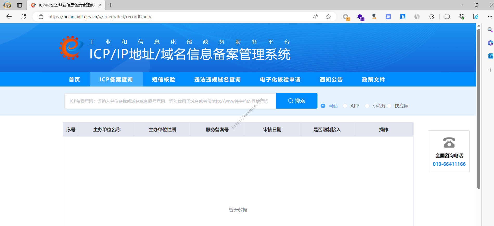
支持对单位名称、域名、ICP备案号进行查询
- 使用单位名称查询
注意需要使用单位全称
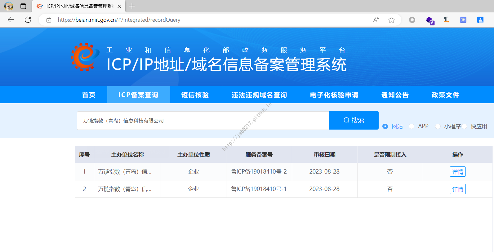
- 使用域名查询
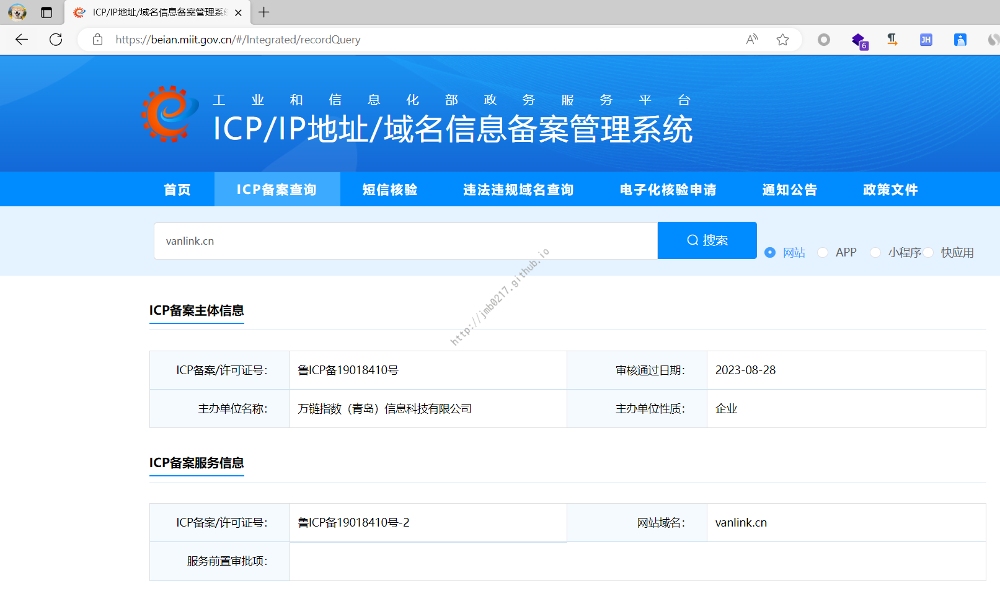
- 使用ICP备案号查询
注意需要使用备案号全称 一般位于网站的footer处
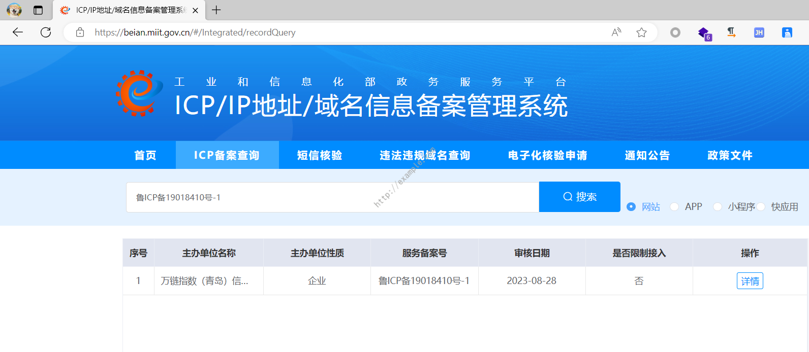
可查询的应用包括网站、APP、小程序、快应用等
0x04 第三方查询工具
0x05 自动化工具
默认公司信息 (网站备案, 微博, 微信公众号, app)
1 | |
对外投资占股100%的公司 获取孙公司（深度2）
1 | |
组合筛选
大于51%控股公司、供应商、分支机构，只要ICP备案信息，并且批量获取邮箱信息
1 | |
使用不同渠道
使用天眼查数据源（或可设定为 all 组合多个数据源）
1 | |
使用多数据源一起收集（暂不支持多渠道+筛选）
1 | |
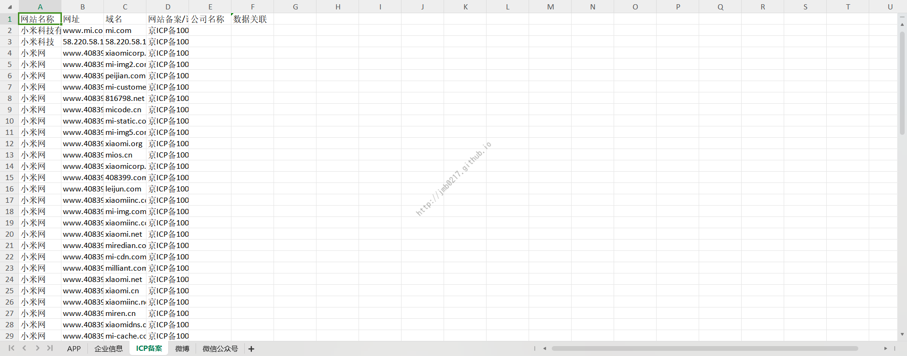
1 | |
例子1 查询目标公司
1 | |
例子2 查询目标公司和子公司，并且持股比例大于50%的
1 | |
例子3 查询目标公司和子公司，包含子公司的子公司，如果要查三层子公司可以使用-deep 3，以此类推
1 | |
例子4 查询天眼查前2页关于北京通管局相关的单位资产
1 | |
例子5 根据文件内容批量查询
1 | |
2.股权信息收集
通过查询股权信息，或者股权穿透图，寻找子公司和孙公司等，一般对外投资超过50%或者有行政权限的都可以算目标，通过查询子公司，再查询子公司对应的产品，可以大范围的扩大攻击面
自动化股权信息收集工具
主要借助天眼查、企查查、阿拉丁小程序、七麦数据、爱企查等
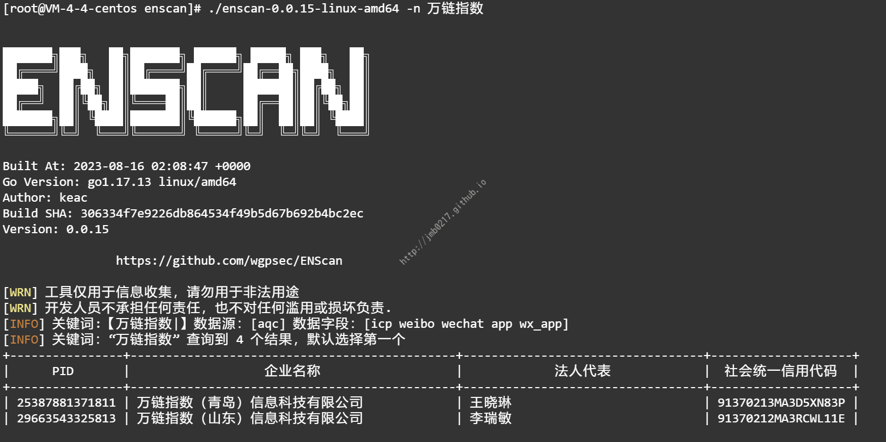
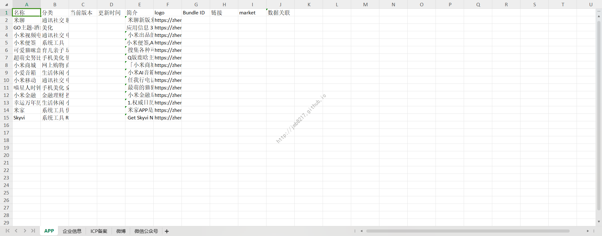
3.企业信用信息
4.众测SRC平台
部分厂商会在自己的SRC平台或众测平台上，定期发布众测的域名，收集这些信息，也不失为一种不错的方式
常用SRC平台列举
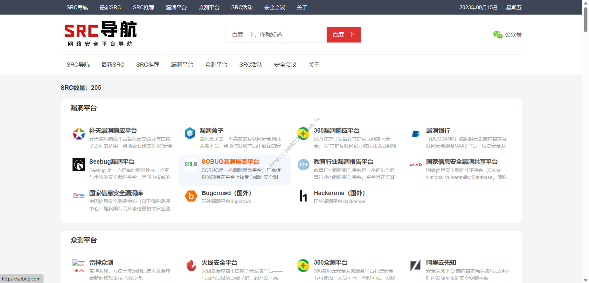
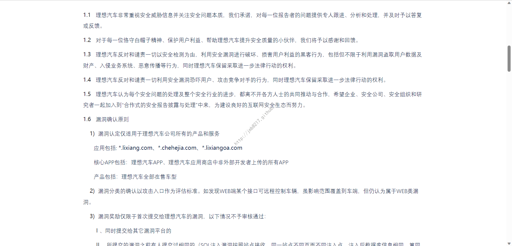
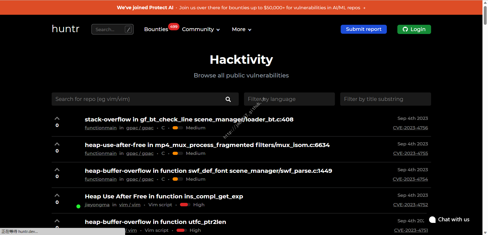
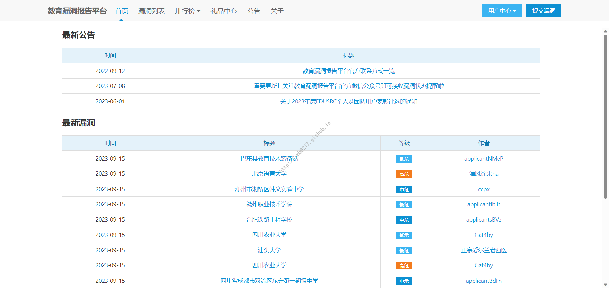
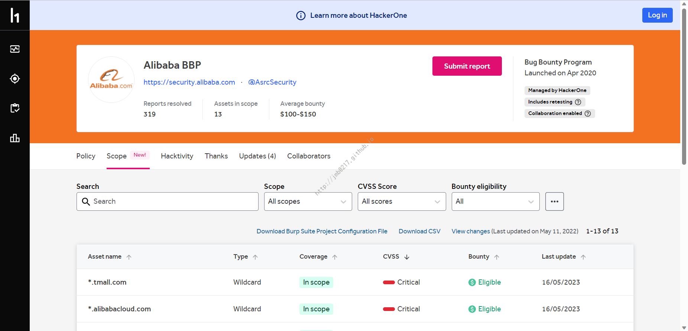
5.网站证书
0x01 什么是网站证书
SSL证书是一种遵守SSL协议的服务器数字证书，由受信任的根证书颁发机构颁发。 SSL证书采用SSL协议进行通信，SSL证书部署到服务器后，服务器端的访问将启用HTTPS协议。 您的网站将会通过HTTPS加密协议来传输数据，可帮助服务器端和客户端之间建立加密链接，从而保证数据传输的安全。
0x02 作用
通过查询共用SSL证书的网站，可以找到相关的其他域名。
0x03 如何利用
浏览器查看（推荐火狐）
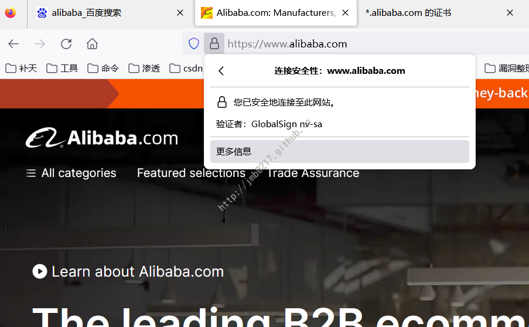
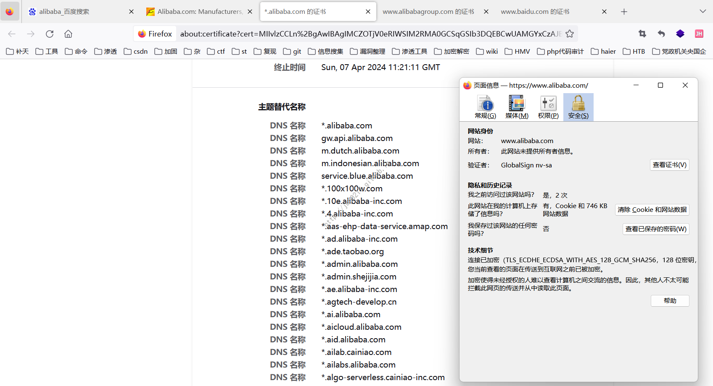
在线证书查看
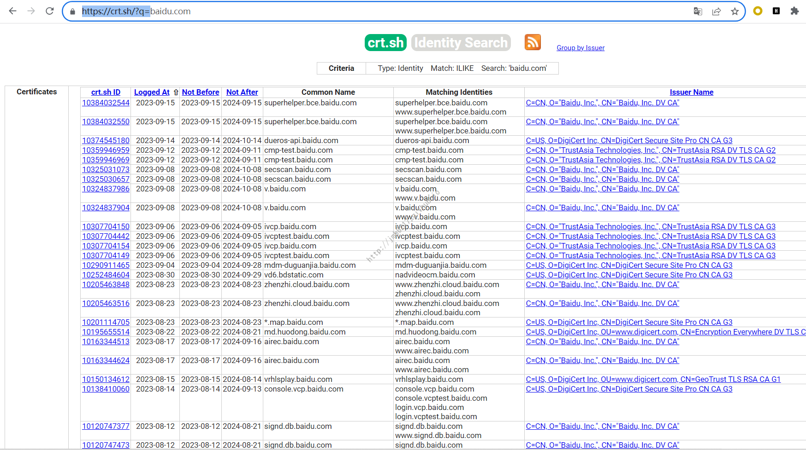
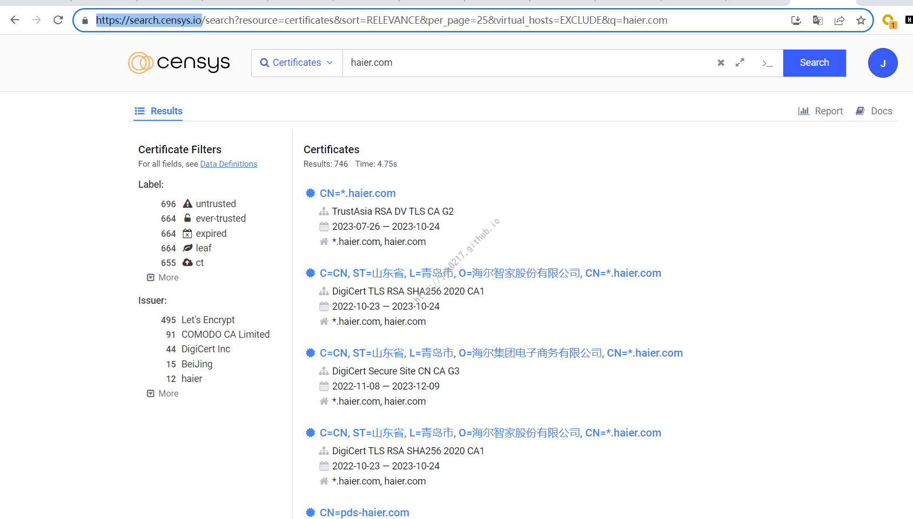
空间探测引擎
鹰图、360Quake、Fofa、zoomeye、微步在线等
搜索语法以鹰图为例
| 语法 | 含义 |
|---|---|
| cert=“baidu” | 搜索证书中带有baidu的资产 |
| cert.subject=“qianxin.com” | 搜索证书使用者包含qianxin.com的资产 |
| cert.subject.suffix=“qianxin.com” | 搜索证书使用者为qianxin.com的资产 |
| cert.subject_org=“奇安信科技集团股份有限公司” | 搜索证书使用者组织是奇安信科技集团股份有限公司的资产 |
| cert.is_trust=true | 搜索证书可信的资产 |
6.WHOIS查询
0x01 什么是WHOIS
WHOIS（读作“Who is”，非缩写）是用来查询域名的IP以及所有者等信息的传输协议。简单说，whois就是一个用来查询域名是否已经被注册，以及注册域名的详细信息的数据库（如域名所有人、域名注册商）。通过whois来实现对域名信息的查询。早期的whois查询多以命令列接口存在，但是现在出现了一些网页接口简化的线上查询工具，可以一次向不同的数据库查询。网页接口的查询工具仍然依赖whois协议向服务器发送查询请求，命令列接口的工具仍然被系统管理员广泛使用。whois通常使用TCP协议43端口。每个域名/IP的whois信息由对应的管理机构保存。
0x02 作用
通过查询目标的WHOIS信息，对联系人、联系邮箱等信息进行反查，获取更多相关的域名信息。重点关注注册商、注册人、邮件、DNS解析服务器、注册人联系电话。
0x03 如何查询
linux本地whois服务
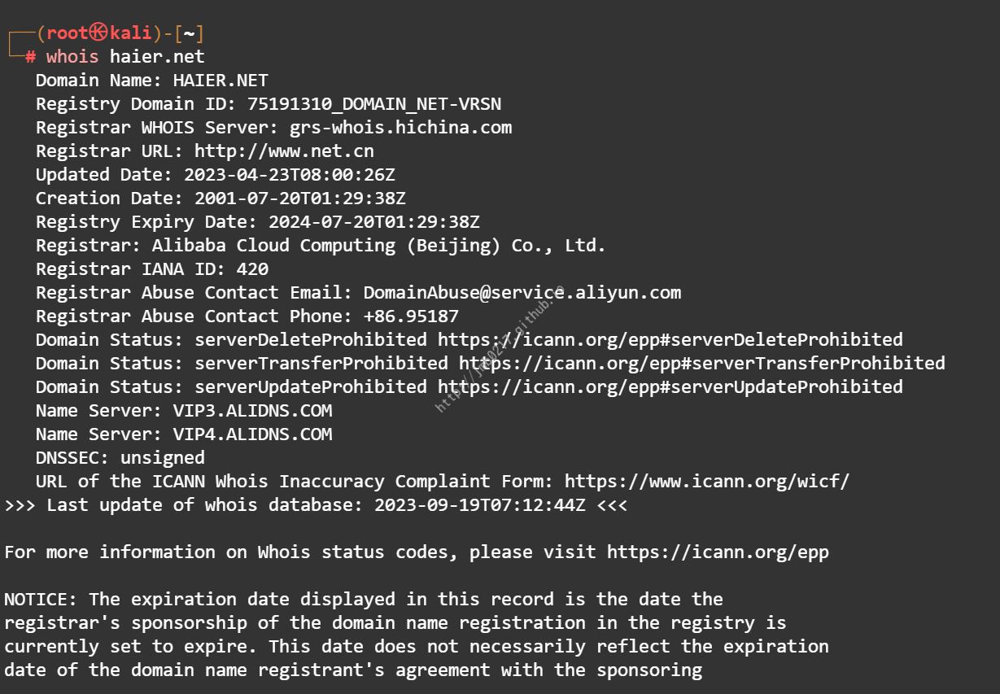
在线whois查询
网站推荐
网站使用
以站长之家网站进行演示，whois查询后部分网站可以直接点击联系人或邮箱后的反查按钮进行反查，若没有则需自己提取whois结果中的相关信息进行反查
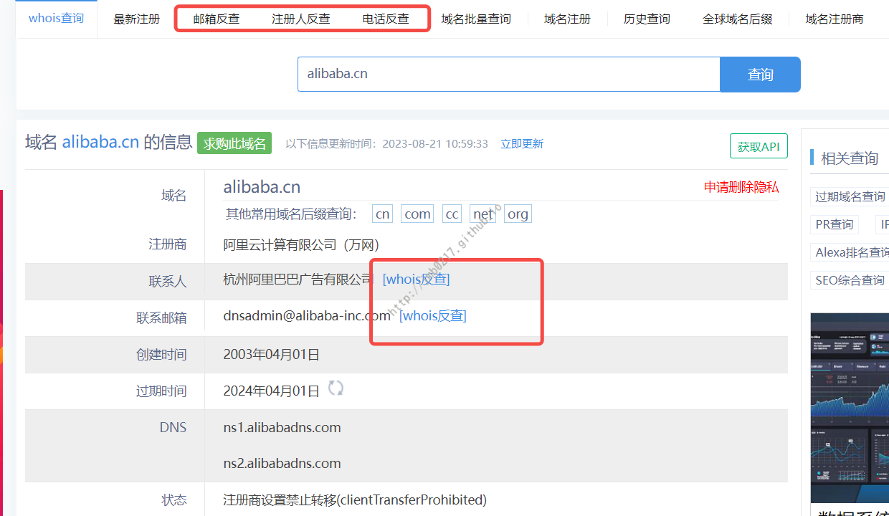
7.IP反查
目标资产的域名往往可能会绑定在同一个IP上，通过IP反查，可以尽可能地收集绑定在同一IP上的主域名
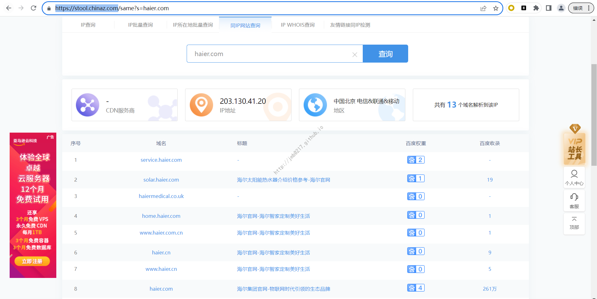
8.浏览器插件
通过Google、FireFox等插件的使用，收集域名信息
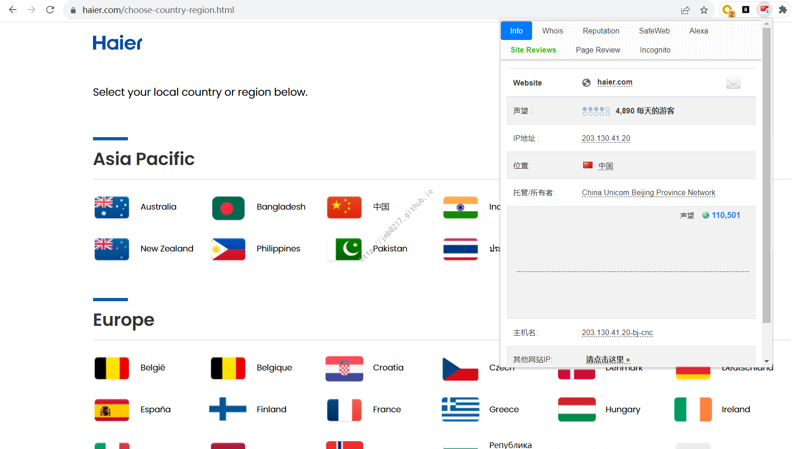
TCPIPUTILS
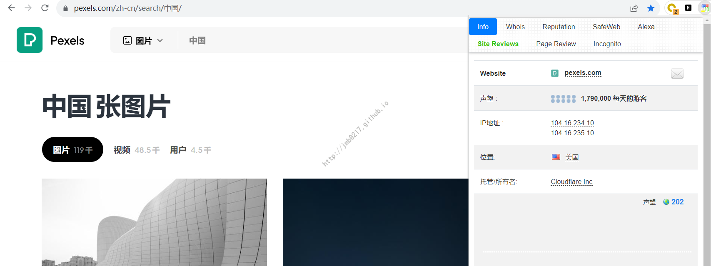
Dnslytics
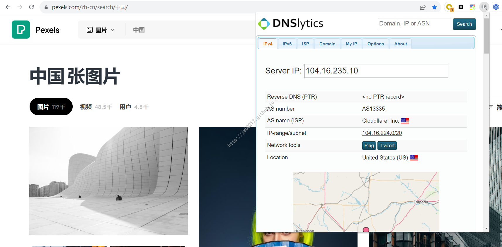
9.Google hack 语法
语法库
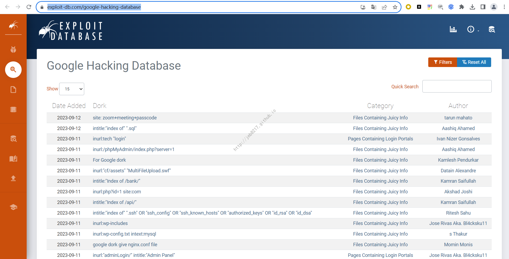
常用参数
1 | |
经典用法
备案查询
1 | |
管理后台
1 | |
上传类漏洞地址
1 | |
注入页面
1 | |
编辑器页面
1 | |
目录遍历漏洞
1 | |
SQL错误
1 | |
phpinfo()
1 | |
配置文件泄露
1 | |
数据库文件泄露
1 | |
日志文件泄露
1 | |
备份和历史文件泄露
1 | |
公开文件泄露
1 | |
邮箱信息
1 | |
社工信息
1 | |
10.DNS共享记录查询
0x01 DNS含义
把域名翻译成IP地址的软件称为域名系统，即DNS。它是一种管理名字的方法。这种方法是：分不同的组来负责各子系统的名字。系统中的每一层叫做一个域，每个域用一个点分开。所谓域名服务器（即Domain Name Server，简称Name Server）实际上就是装有域名系统的主机。它是一种能够实现名字解析（name resolution）的分层结构数据库。
0x02 如何查询
首先借助nslookup命令查询是否存在自建NS服务器
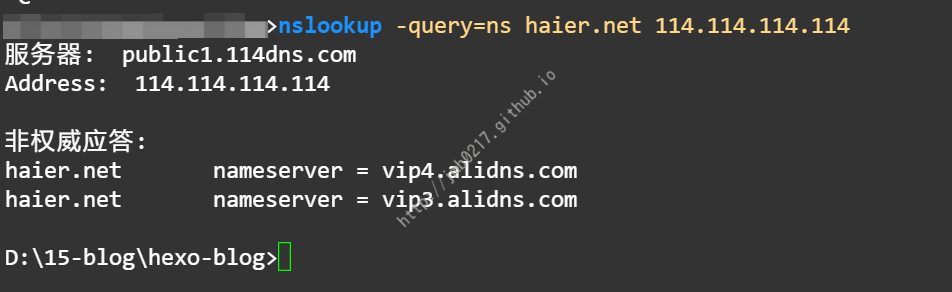
这里只针对拥有自建DNS服务器的目标，公开DNS服务器所查询的数据会有很多干扰项
使用https://hackertarget.com/find-shared-dns-servers/进行查询
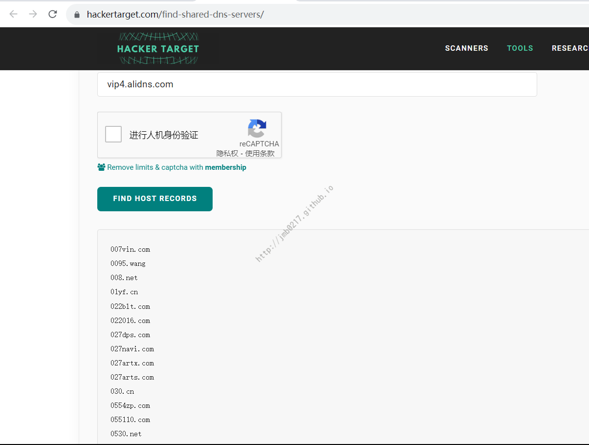
11.网站归档查询
网页归档是对网站历史网页进行整理、存储和利用的过程。 网站遇整合迁移、改版等情况，要对有价值的原网页进行归档处理。 归档后的页面要能正常访问，并在显著位置清晰注明“已归档”和归档时间。
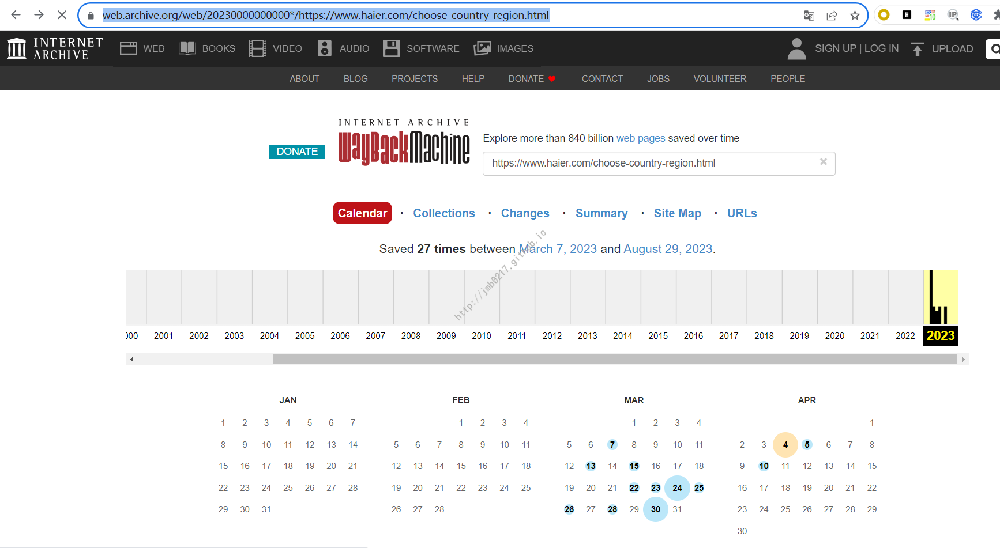
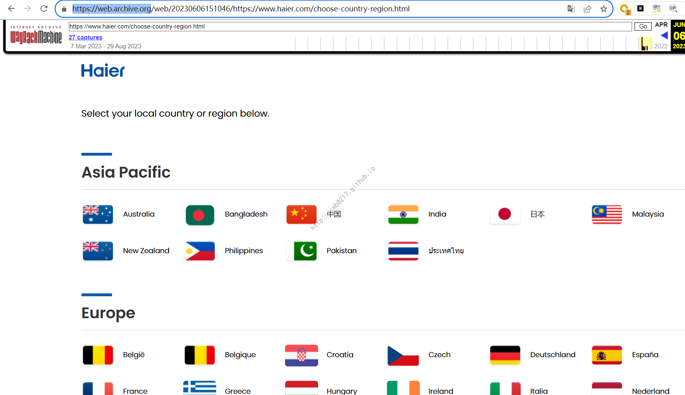
12.网站相关邮箱查询
使用hunter查询，输入主域名，根据查询到的邮箱结果，可能查找到与主域名相关的其他信息。
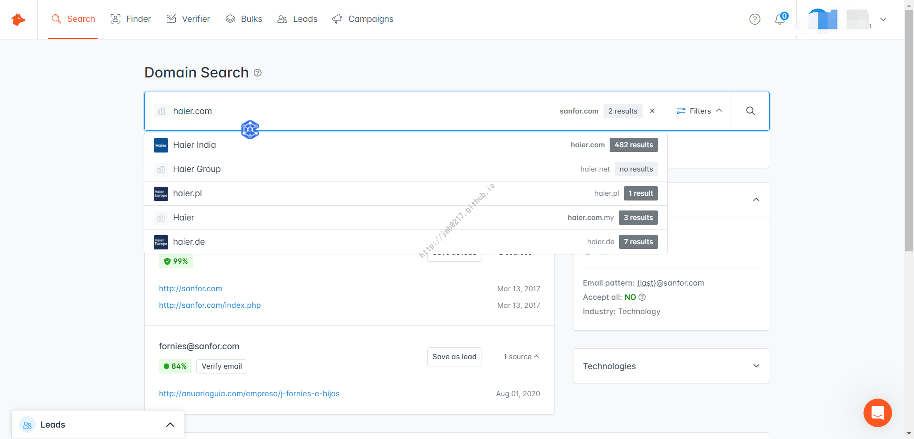